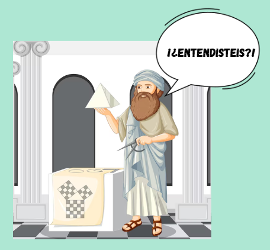

El teorema de Pitágoras establece que en un triángulo rectángulo, la suma de los cuadrados de las longitudes de los dos catetos es igual al cuadrado de la longitud de la hipotenusa. Su fórmula \(a^{2}+b^{2}=c^{2}\), donde 𝑐 es la hipotenusa (el lado más largo) y 𝑎 y 𝑏 son los catetos.
